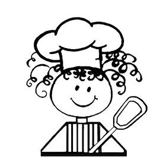

PÃO DE QUEIJO: INGREDIENTES
4 colheres (sopa) de azeite
meia xícara (chá) de Leite Líquido
1 xícara (chá) de polvilho doce
1 xícara (chá) de polvilho doce
1 e meia xícara (chá) de polvilho azedo
1 e meia xícara (chá) de inhame cozido e amassado
2 colheres (sopa) de semente de chia
1 pitada de cúrcuma
meia xícara (chá) de queijo meia cura ralado (60 g)
1 pitada de sal
MODO DE PREPARO
1. Em uma panela, adicione o azeite e o Leite MOLICO e leve ao fogo até levantar fervura.
2. Em um recipiente, coloque os polvilhos, despeje sobre eles a mistura fervente e mexa bem.
3. Junte os demais ingredientes, mexendo bem, até que forme uma massa uniforme que não grude nas mãos. Se necessário, acrescente um pouco mais de polvilho doce.
4. Faça bolinhas e disponha em uma assadeira untada com um fio azeite.
5. Leve ao forno médio-alto (200°C), preaquecido, por cerca de 40 minutos ou até dourar.